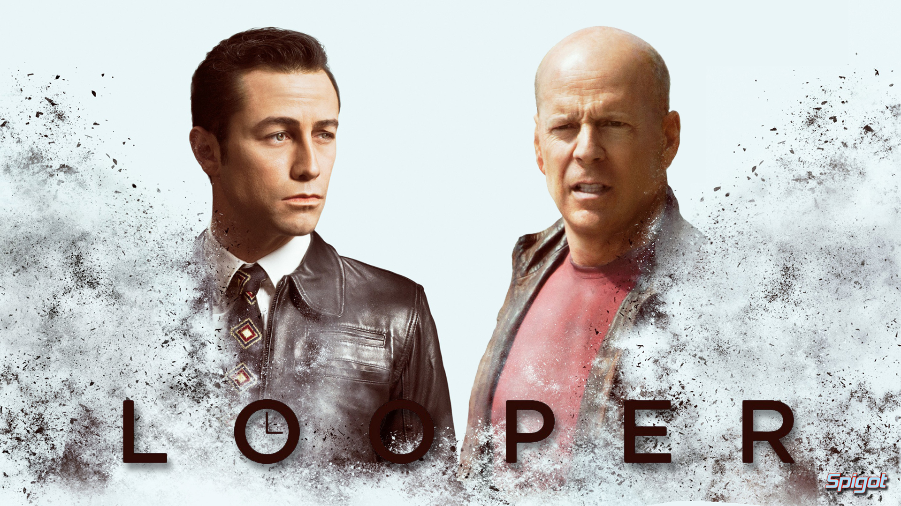

Looper
2012
Synopsis:
In a future society, time-travel exists, but it's only available to those with the means to pay for it on the black market. When the mob wants to eliminate someone, it sends the target into the past, where a hit man known as a looper lies in wait to finish the job. Joe (Joseph Gordon-Levitt) is one such hired gun, and he does his job well -- until the day his bosses decide to "close the loop" and send Joe's future self (Bruce Willis) back in time to be killed.